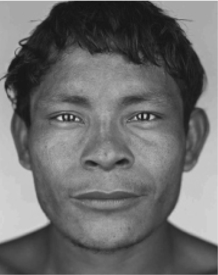
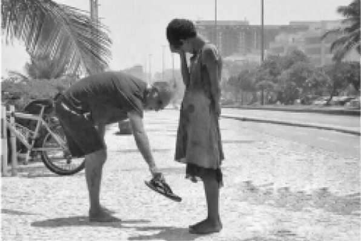
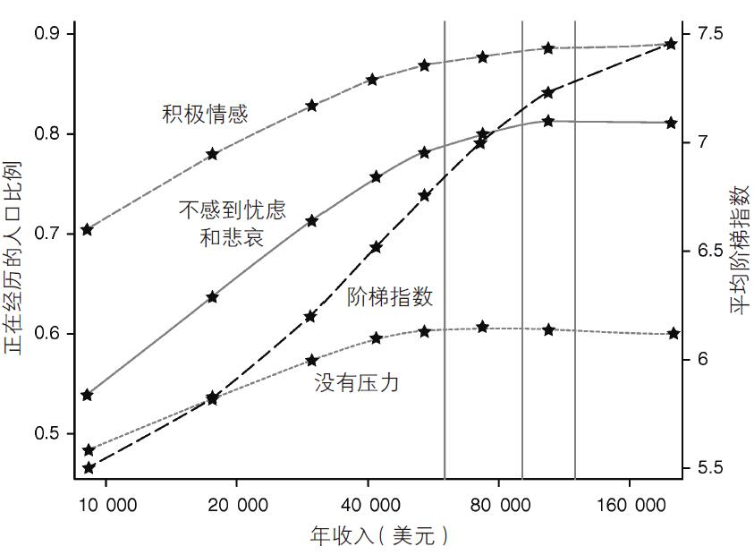

语出犹太笑话
一些问题
罗列幸福的来源是一项特别棘手的任务。其中一个难题就是得明确如何分门别类。我们应该聚焦在人际关系上，朋友和家庭上，社群上，还是以爱为中心？一般来说，不同的研究人员会使用不同的概念，并没有哪一组概念是“唯一正确”的。
第二个难题在于，你所生活在其中的社会类型决定了哪些因素能够左右人们的幸福感。在巴布亚新几内亚的某些地区，人们是否幸福很大程度上取决于他们拥有食火鸡的数量。我敢打赌，在世界上其他大部分地区，并没有人想要这些脾气古怪、难以相处的鸟。不过，虽然对于这些以交换食火鸡为生的部落成员来说，金钱无甚用处，但如果想在比弗利山庄 [2] 吃得开，还是得有大把 金钱才行。在很大程度上，你的居住地决定了金钱对于获得幸福感来说有多重要。
因此，金钱对幸福来说到底有多重要这个问题并没有一个万无一失的简单答案。同样，也没有人能够拿一个万无一失的简单答案来解释食火鸡、渔网、电话或汽车对幸福来说到底有多重要。我们只能具体问题具体分析。这个道理浅显明白，却鲜有人注意。社会所面临的选择之一不仅仅是如何普及幸福的来源，而是决定哪些事物会被塑造 为影响幸福的重要因素。
不过，我们都知道，不管你周围的环境如何，有些东西注定会对幸福造成很大影响。让我们随机选择一个婴儿，假设可以把他随机放到任意时空的任意一个社会中。在他的一生中，哪些东西会对他的幸福造成最大影响？当务之急是帮助他在哪些领域步入正轨？尽管世界上不存在一份“最正确”的幸福要素清单，不过关于这份清单的大致内容依然存在很多共识。
基因和设定值
已经有越来越多报道向人们揭露了基因对于人类幸福的影响。或许你曾听说过，基因决定了我们50%的幸福感，也就是说，这部分幸福是你天生的幸福“设定值”的产物。在本书中，我不会过多讨论这种观点，因为首先，我们无法改变基因，也不应该尝试改变基因；其次，目前已经没有人还在坚持认为基因对幸福影响过于巨大，以至于无法通过其他任何途径来提升自己的幸福感。这就是为什么研究人员仍然要费尽心思列举出幸福的来源。即便每个人确实都有自己天生的幸福设定值，但很明显，很多因素依然可以长期影响我们的幸福感。例如，一份糟糕的工作。
幸福设定值理论的核心真相在于揭露了人类惊人的调整和适应能力。随着时间流逝，我们渐渐适应了生活中的大部分变化，最终依然可以像变化发生之前一样幸福。因此，本章将专注于研究那些人类无法 适应的影响幸福的重要因素，这些因素对我们的幸福感有持久的影响。
基因无法主宰我们的命运。科学家试图通过研究幸福的“可遗传性”来揭露基因对幸福的影响。也就是说，他们想知道人与人之间千差万别的幸福感有多少是因为受到不同基因的影响。在研究可遗传性问题的过程中，人们会犯下各种各样的错误。为了加快本书节奏，我不进一步阐述其中错综复杂的细节，只提供一个简单的例子来供读者参考。在关于幸福可遗传性的一篇文章中，诸位作者指出，试图提升幸福感就像“试图长高一样徒劳无功”。他们的观点传播甚广。按照这种说法，我们被困在了追逐享乐的跑步机上，没有任何实际进步的希望。然而该观点实则大错特错，并且至少有一名原作者在文章发表后推翻了其中的观点。要知道，尽管让自己长高确实是一项艰巨的任务，但为了长高所付出的努力并非徒劳无功。在过去150年间，日益提高的生活水平确实令荷兰男性的身高增长了8英寸。也就是说，他们从5英尺4英寸的矮个子变成了今天身长超过6英尺的大高个儿。 [3] 当然，身高的可遗传性确实比幸福感更高。
假如我们能像现代社会提高了人们的身高一样来增强人们的幸福感，这将会是一项影响深远的成就。
幸福的来源：SOARS
那么，幸福的主要来源究竟有哪些？目前，研究人员已经就五项答案大致达成共识，我将集中分析这五点。这五项幸福的来源排名不分先后（只是为了制造一个好记的英文缩写），它们分别是：
1. 安全感
2. 生活态度
3. 自主权
4. 人际关系
5. 需要技能、有意义的活动
科学文献已经充分证明了这五项幸福来源的重要性。事实上，这份清单是我在心理学家理查德·瑞安和爱德华·德西提出的普遍人类需求列表的基础上进一步拓展而来的。这两名心理学家提出，人类的三项基本需求分别是自主权、胜任力和关联性。而我新加入的两项是生活态度和安全感。瑞安和德西对于幸福的解读与福祉理念更加接近，尽管他们的观点在学术界尚有争议，但人们基本认可以上三项基本需求对幸福感的重要影响，其中唯一有可能受到质疑的是自主权这一项。
安全感
幸福最明显的必要前提就是不能有受到威胁的感觉：你拥有必不可少的东西，并对此感到安全。表面上来看，这个道理似乎很浅显。当收账人前来敲门的时候，肯定不会有人觉得自己很幸福。
不过安全感对人类幸福感的影响要比这复杂得多。生活中存在着各式各样的安全感，而能够影响幸福感的安全感类型往往出乎我们意料。例如，即便我们预先知道肉体风险的存在，也不一定会为此感到焦虑。攀岩并不是世界上最安全的业余消遣，然而攀岩者往往认为，这种攀附在悬崖峭壁表面、一不留神便有性命之虞的活动能够帮人定心凝神 。皮拉罕人的生活比我们中大部分人更加危险，然而他们似乎全都对此不以为意（图8）。说到这里，其实肉体上最安全的人往往最焦虑、最爱操心，也最容易压力过大。这或许并不是巧合。一些具有肉体风险的活动往往能够帮助我们集中精力，有效抑制那些常常侵入并占据我们大脑、令我们分神的想法和愁绪。

图8 霍皮，一名皮拉罕男子
简而言之，能够影响幸福的安全感是那些可以察觉到 或感知到的安全感。似乎至少有三种安全感在我们的幸福中扮演了格外重要的角色。目前为止，我们主要讨论的是对于物质 安全感的理解。同样，这种感觉可能并不受实际物质安全情况的影响。在现实生活中，财富反而会滋生物质不安全感，刺激人们的贪欲，提高人们对物质条件的期望，使人们习惯放纵奢侈的生活方式。这会让我们变得更加需要金钱，更容易失望、沮丧和焦虑。这种观点浅显易见，且无甚新意。古希腊享乐主义哲学家伊壁鸠鲁对于如何过上快乐的生活有以下这条建议：远离奢侈品，过简单生活。奢华的生活会将你变成一个欲求不满的人，你的幸福完全由那些易失的财物所主宰。斯多葛派和佛教中都有类似的劝诫，尤其佛教教义均以戒除那些让人们易受折磨的渴望为主题。在一项针对美国顶级富豪的研究中，研究员罗伯特·肯尼表示：
财富是一把双刃剑，它可以帮我们隔开诸多不幸，让我们心想事成，也可以使我们越来越贪婪，为我们制造出新的弱点。财富或许真的会让某些人感到更不 安全。广告作为现代消费经济的特色产物之一，其存在就是为了确保人们持续产生这种不安全感。铺天盖地的广告数量，为的就是唤醒人们的不满足感，让他们渴望拥有之前根本不需要的商品。
第二种对人类幸福至关重要的安全感就是社交 安全感：一个人对于人际关系和自己在社群中的位置感到安全。由于人类的社交属性根基非常深厚，因此这种形式的安全感也尤为重要。之后我们会具体分析“人际关系”这一点。
第三种安全感我们可以称为事业 安全感，指的是一个人可以在自己的主要事业中看到成功的可能性，从而产生安全感。这里的“事业”指的是你所认同的一切决心或目标，而这些决心或目标反过来也会成为你的身份或自我意识的一部分。毕生职业或使命当然算作事业，当一名优秀的家长也是一项事业，研发出某种疾病的治疗方式也是一项事业。在推进事业的过程中，我们既有可能成功，也有可能失败，对失败的恐惧可能就会成为我们不幸福的源头。因为认可自己的事业，所以我们也将自尊心押在事业成功与否上。一旦事业失败，人们很容易认为自己 也很失败。这种感觉糟糕透顶，并且，仅仅怀疑自己有可能失败也会产生同样可怕的焦虑感。
对于我们这些幸运到可以拥有选择权的人来说，人生中的众多选择之一，就是决定将多少本钱投资在有风险的事业上，例如，开办一家公司等。这类事业通常回报高、有意义，值得投入。不过，追逐高收益一般也伴随着更高的事业不安全感，令人担忧、焦虑、受挫。人们必须自己把握得失平衡，而且也没有一个“最佳”方案可以解决这个问题。
最难觉察的一种安全感就是时间 安全感。时间安全感代表一个人有充足的时间来完成自己需要做的事情。大部分情况下，这种安全感的缺失也就是我们通常所说的“压力大”。缺乏时间安全感以至于长期压力过大的人一般都不太幸福。这既是因为压力本身会消解幸福感，也因为压力会穿透我们的神经，让我们易怒、焦虑，容易忽视身边美好的事物，完全抽去我们生活中的质感和快乐。虽说有一点压力是好事，但“压力大”和“幸福”则是南辕北辙的两件事情。
不过，也存在一些微妙有趣的例外。有些人会从快节奏的生活中获得巨大满足感，他们享受这种时间刚好能够完成任务的感觉。厨师就很有可能是这样的人，他们的日常操作流程可能如同一套舞蹈动作。工作顺利时，每个环节都能完成，而且完成得非常漂亮，但一切都只是刚刚来得及 。这种节奏可以让人精神抖擞，除非那天运气不好，不然绝对不会给人带来压力。但毋庸置疑，这种生活方式中一定充斥着很多压力巨大的日子。这也是一个需要个人权衡取舍的问题。
安全感有助于提升幸福感，但并非多多益善。过多的安全感会让人自满、懒惰、软弱、不堪一击，也会阻碍个人发展。娇生惯养、不经风雨的童年可能会孕育出一个不幸福的成年人，无法或不愿在遇到困难时坚持下去，也无力招架日常生活中的不确定性、危险、挫折和失败。他们有可能变成“回巢族”或“啃老族”，在成人之后依然需要家长照顾；也有可能是两个身心不成熟的大儿童虽然结合在一起，但最终还是无缘无故地离婚；又或者有些人对于任何行业都只能浅尝辄止；等等。
我相信今天很多读者对于上述问题都很熟悉。在美国，很多孩子大部分时间都待在室内，处于成年人严密的监护下，没有什么机会随意跟其他孩子玩耍或自己安排玩伴。之所以会出现这种极端情况，主要是因为家长最惧怕的“噩梦”便是自己的孩子被陌生人绑架，从此再也见不着活蹦乱跳的小家伙。有些家长会觉得在这方面无论如何小心都不为过，因此他们购买了“牙齿印记”服务，以便将来指认他们（目前警觉性很高的）孩子残缺或烧焦的尸体。人们会以为这种犯罪现象无处不在，然而美国司法部的一份调查表明，一年时间内，在这个有3亿人口的国家，共发生了51起这样的案件。当然，这种事情一次都嫌多，可是，这个数字跟因蜜蜂、胡蜂、大黄蜂蜇咬而导致的死亡人数差不多。也就是说，这几乎是一个可以忽略不计的风险。
可是，我们很难会听到家长说，“我绝不会让孩子自己在小区里跑来跑去，蜜蜂会蜇死他的”。作为对比，美国一年有219人死于骑马事故，17000人死于摔跤，36000人死于流感。由此可见，提升幸福感的途径之一就是理智地看待风险。
生活态度
“幸福与否是个人选择。你的态度决定一切。”在关于幸福的常见言论中，这一条又是最常出现的，至少我个人感觉如此。励志书本中也充斥着类似的言论。这其中有一定道理，可是假如我们来分析一下这句话的字面意思，会发现这完全就是胡说八道。一个典型的抑郁症患者无法通过意念获得幸福，正如他无法展翅飞翔一样。告诉这样一个人只要他想，就完全可以感到幸福，是一种既愚蠢又残忍的做法。这就像告诉癌症患者他的死亡完全是自己的问题，因为态度好的人都没有生病一样。幸福与否绝不是个人可以选择的。
不过这种夸张的说法并非无中生有，我们的生活态度对于获得幸福感确实非常重要。就算廉价心灵鸡汤贩子的说辞言过其实，我们也确实在很大程度上能够控制自己的态度。诚然，假如你天性就像《小熊维尼》中的驴子屹耳一样，成天愁眉苦脸、自怨自艾，那么跳跳虎那种活泼积极的个性对你来说确实遥不可及。假如你住在曼哈顿，你肯定也很难保持新奥尔良人那种懒散的行事风格。不过在很大范围内，我们可以调整自己的生活态度，让自己更加幸福。
斯多葛派认为，个人完全能够掌控自己的福祉，一切都取决于人的性格。苏格拉底也持同样看法，认为只要我们坚持自己的道德水准，就算占据上风的人折磨我们、杀害我们，也无法真正伤害到我们。重要的不是你身上发生了什么，而是你如何应对。按照斯多葛派的观点，真正的圣人不管遇到什么都会处变不惊。苏格拉底本人就是一个极好的例子。佛教徒也有类似的信仰，他们认为我们有能力通过戒除那些造成我们受苦的渴望来获得幸福。
不过，在这些观点中，幸福依然不是一双鞋，你可以随意选择要或不要。它更像是一项你必须通过多年努力才能习得的技能 。没有任何一个哲学家会疯狂到认为任何人都可能随便拿起一本书，然后顿悟得道，自己参破幸福的真谛。世界上有足够多不幸福的佛教徒可以证明这项任务其实有多么艰巨。
但是只要努力的方向正确，我们可以充分控制自己的大部分心理状态。第二章中我曾提到马蒂厄·里卡德，他将冥想艺术称作“思想训练”。在一项研究中，科研人员发现他的大脑活动中存在令人惊叹的“幸福”模式。研究成果发表后，便有人哗众取宠地将他称为“全世界最幸福的人”。不过，在一系列研究中，里卡德确实展现了无与伦比的自我意识和控制能力。研究人员将他自己描述和列举的情绪体验与他实际的身体反应进行比对，发现他对细节的把握和准确度令人感到不可思议。在一项实验中，研究人员在他进行冥想时制造出类似枪击的巨大噪声，他却几乎没有表现出普通人应有的惊吓反应。一般来说，这种事情不是人们自己可以控制的。里卡德本人描述道：“我并没有努力尝试控制自己不要受惊，只是爆炸声在我听来不那么响亮，好像跟我隔着一段距离似的。”另外一项针对其他冥想者的研究发现，这些人可以将自己的手指和脚趾的温度提高17华氏度 [4] 。他们可以忍受极寒环境却并没有感到明显不适。也就是说，他们可以在温度低至0华氏度 [5] 的情况下睡在喜马拉雅山山脊上，仅以一条披肩裹身。
并非只有佛教徒才能学习思想训练的技巧。就在写下这段内容时，我刚刚结束一段旅途，正坐在回家的飞机上，心力交瘁。我身后坐着两个大概6～8岁的孩子以及他们的母亲。孩子们不太安静，母亲则一再徒劳地恳求他们小声一点，那场面实在算不上令人放松。我简直怒不可遏。紧接着，按照里卡德传授的经验，我不再把注意力放在身后的噪声上，而是集中精力调整自己的反应。我有什么可生气的呢？我这样愤怒能解决什么问题吗？我凭什么指望到处都是完美的孩子或完美的育儿方式？我并不需要对自己的问题给出明确的答案，仅仅在思考这些问题的过程中，我的情绪烟消云散。我整个人都放松下来，注意力重新回到自己的工作上。
接着我前面的乘客完全放平自己的座椅，令我的膝盖饱受摧残。我开始重复之前的思考过程。如有需要，可以不断循环往复以上的思考。
什么样的生活态度可以提升幸福感呢？并没有一个呼之欲出的“最佳”答案，每种态度都有各自的优劣，也适用于不同人群。并且，“生活态度”是一个很广的概念，包括了我们如何看待、解读、解释、评估和回应事情等各个方面，还包括我们的价值观。
当我们讨论生活态度对幸福的影响时，主要涉及两种生活态度——积极应对 和坦然接受 。积极应对，顾名思义，就是专注于生活中积极的地方，品味生活中的小快乐，保持乐观和感恩，知足常乐，等等。从万事万物中发现诙谐之处，允许自己犯傻或者不按常理出牌。
坦然接受主要是指当事情不按你的预期发展时，不要崩溃，要接受现实，不要强求，维持合理的期望值。某些人可能会觉得这是失败主义者的论调，但事实并非如此。你可以秉持这种生活态度，同时依然对生活充满希望，也继续为更好的生活而努力。（毕竟里卡德可不是什么懒鬼。）只是当情况不尽如人意时，你可以更潇洒地耸耸肩膀，摆脱负面影响，继续前行。你不会像期望过高的人一样欲求不满，同时你也可以摆脱自己欲望的滤镜，更容易欣赏到生活中美好的事物。
第三种能够有效帮助提升幸福感的生活态度是关心他人 。研究表明，更关心他人的人活得更加幸福。这有一部分是因为幸福的生活会让人们更乐于社交，也更关心他人，但同时，关心他人反过来也对我们的幸福感有着非常强烈的影响。很多人都知道帮助他人能够有效提升幸福感。心理学家迈克尔·阿盖尔指出，在休闲活动中，只有跳舞能够产生比从事志愿活动和慈善工作更高的“欢乐水平”。另有研究发现，在为别人花钱时，人们能够获得比为自己花钱更多的幸福感。我认为乐于助人还具有更广泛的道德意义，包括强烈的正直感，如诚实、守信等。在这一领域似乎还没有很多科学研究，但长期以来，哲学家一直提倡这种理念。

图9 里约热内卢，一名男子把自己的鞋子送给无家可归的女孩
例如，尽管在古希腊享乐主义哲学家伊壁鸠鲁看来，快乐是我们的终极人生目标，但他同时还坚决认为人们应当维持正直和其他道德准则——他认为，这对内心的平静来说至关重要。
最后一种生活态度与驱使我们工作和从事其他活动的动机有关。举例来说，物质享乐主义价值观一般不会让人们变得更幸福。研究表明，更重视金钱、财产和地位的人一般都没那么幸福，而不太重视物质享受的人则要幸福得多。概括来说，真心追求实现自己内心梦想的人，要比被财富或地位等外部回报所驱动的人更幸福。研究人员将前者称作内在动机 ，后者为外在动机。在工作环境中，只是为了薪水或获得一技之长而工作的人通常会机械对待工作内容，因为他们工作只是为了获得别的东西（金钱、升职等）。他们的工作经历也没有那些将工作视为“使命召唤”的人那么满意。（一般我会用不那么花哨的词来形容工作，像“职业”或“行业”。）这种差异并非来自工作本身，而是取决于工作者的态度。门卫和垃圾工都可以拥有使命感，认为自己的工作有内在意义，并且非常充实。
请注意，富人或有物质需求的人并不一定就持有物质享乐主义价值观 或将物质享受视为头等大事。重点在于你真正在乎的是什么，而且穷人一般比富人更看重物质条件。一个人可以非常享受购物，并梦想购买一些奢侈品，但与此同时，这个人有可能根本不在意自己是否能真正拥有那些奢侈品。我小时候，每年总是殷切期盼家里收到西尔斯百货公司和杰西潘尼百货公司的圣诞商品目录，但我从来没有想过一定要得到目录里的东西，也确实没怎么买过那些东西。
总结一下，至少有以下四种能够有效促进幸福感的生活态度：
1. 积极应对
2. 坦然接受
3. 关心他人
4. 内在动机
社会文化中所蕴含的生活态度也会影响人们的幸福感。美国文化由内而外散发出乐观、快乐、友好的气息，很明显，美国人因此更容易获得幸福。委内瑞拉、哥伦比亚、巴拿马、哥斯达黎加和墨西哥等拉丁美洲国家的国民幸福感高得惊人，考虑到这些国家的物质条件并不宽裕，这个结果就更加难能可贵了。在国际幸福研究中它们常常名列榜首或遥遥领先。原因之一似乎是在这些国家中，家庭和集体的联系较为紧密。但文化对此也有巨大的影响。拉丁文化倾向于关注生活中值得享受的事情，如庆祝活动、放慢节奏、出门闲逛等，他们追求随遇而安。哥伦比亚人有一句谚语，当旅途中发生不测，如汽车出故障时，他们会说：“Todo es parte del paseo.”。意思是，这都是旅途的一部分。
我在亚利桑那州图森市生活过一段时间。有一天，傍晚时分，我和妻子抱着小婴儿，在市里人烟较为稀少的地段像无头苍蝇般绕来绕去，试图寻找一家餐厅，却没找到。在争执下一步该如何行动时，我们俩略微起了一点口角。一个拉丁裔流浪汉走向我们。他并不是来乞讨的，只想教训我们一下。“你们俩有毛病吗？你们有一个美满的家庭。看看你们拥有的一切。你们应该感到幸福！”从流浪汉口中说出这番话，确实叫人无地自容。不过他没说错。
自主权
语出忒皮里特·奥雷·赛特提
假如你有跟幼童一起生活的经历，那么你一定明白自己的事情自己做和自己的决定自己做乃是人类的本能渴望。“我要自己开门！”是孩子口中常常出现的话。追求自主权是人类的本性，而主宰自己人生的感觉也是幸福的重要来源之一。感觉自己能够不受他人影响做决定的人，要比其他人幸福得多。自主权甚至能让人更健康。有研究表明，只要给老人院里的老人哪怕一丁点自主权，他们也会更幸福、更健康，甚至活得更久。例如，养老院可以让老人自己负责房间里的植物，而不是请员工统一打理。
简单来说，自由，就是幸福的一大主要来源。不过，某些方面的自由比其他方面更为重要，并且自由也不是越多越好。我们这里讲到的自由，即自主权 ，指的是一个人能够自主选择。因此，看一个人有没有自主权，就要看他能不能为自己的事情做主，能不能不受强迫、高压，不屈从于别人的意志。
举例来说，经营一家小企业是一项有风险、有难度的工作，可是小企业家却普遍认为自己很幸福，不用被老板呼来喝去是一项非常诱人的条件。事实上，这正是工资制经济体系的重大缺陷。由于这项缺陷无处不在，我们常常忘记它的存在。成为雇员，就意味着你要听从别人的突发奇想。工资制经济体系一度被称为“工资奴役”，至今还有人依然这样认为。
我们不应当把自主权同另一种自由，即选择自由 弄混。选择自由代表人们能够从一系列选项中选出他们最想要的。这种自由对幸福来说重要吗？目前我们掌握的证据比较模棱两可，不过，选择自由度更高的人似乎在平均幸福感方面确实略胜一筹。金钱的影响力最能说明这一点，因为金钱的好处本质上就是能够为人们提供更多选择。稍后我们会进一步讨论这一点。
当然，人们不一定非要有很多选择才可以幸福。狩猎采集者的人生中就没有什么选择，但至少他们中有些人还是喜欢自己拥有的选项，并设法过上比较幸福的生活。不过，选择自由确实能让人摆脱困境，更容易找到让我们更加幸福的东西。很多人，包括我自己，都在从事自己认为有意义的职业，然而假如我们生活在传统社会或极权国家中，就根本没有这些选择。在那种环境下，人们别无选择，只能在某些工厂中劳作，或者打理家族农场，不管他们愿不愿意。
同时，只要拥有选择的权利，就能产生一种由可能性所带来的自由和快乐。例如，中国及世界很多地区对汽车的需求日益旺盛，很大程度上可能就是因为汽车能给人带来自由感。对很多人来说，想象自己沿着一望无际的高速公路开向夕阳，是非常动人的场景。
从另一方面来说，选择自由也需要人们付出相应代价。很明显，在有选择的时候，人们犯错的概率也会增加。同时，从更多选项中做出选择也非易事，甚至会激发人的焦虑感。有时人们甚至会逃避做出选择（逃避做出决定），因为一旦进行选择，就不能再将坏结果推卸给运气差，也不能耸耸肩膀就抛在脑后，相反，人们会心生懊恼，陷入自我谴责。选择也会削弱人们的决心和满足感，让我们的人际关系、财产和事业都变得更加不可预知，从而可有可无。例如，离婚率上升的其中一个原因就是人们逐渐认识到伴侣的可替代性，从而对婚姻现状愈发不满。（我们可以从这个角度来想一下：假如你跟某人被困在荒岛上，那么你们肯定能找到天荒地老的办法。）巴里·施瓦茨是一名顶尖学者，专门研究选择的代价。他有一篇文献综述的主题就是选择的影响，文章标题为《自由的暴政》，而他最近出版的一本新书题为《选择的悖论》。
人们常常嘲讽自主权是一个狭隘的西方个人主义理想概念，不适合大部分文化。不过，在“阿拉伯之春”中冒着生命危险加入冲突的大批埃及人、突尼斯人、利比亚人、叙利亚人和也门人显然对这种论调不以为然。自主选择的理想已经传遍全球，因为人类天生就不喜欢任人摆布。
不过批评家们也没说错，西方个人主义理论确实在世界上很多国家和地区不被接受。在亚洲、非洲和拉丁美洲等社群文化或集体主义文化中，人们更喜欢把自己跟家庭或社区联系在一起，更注重扮演自己的社会角色，努力满足社会对自己的期望，不那么关心个人隐私和自我满足。这强烈影响了他们想 做的事情，也表示人们在做决定时会主要参考别人的态度和利益。事实上，你的人生不完全是你自己的，而是与别人的人生息息相关。在一些需要考虑“大局”的问题上，如结婚对象等，人们可能没什么选择权。尽管如此，他们或许还是可以控制自己的大部分人生。例如，掌控自己的日常行程可能比做出重大决定更能令人们感到幸福，原因很简单——日常生活近在眼前，永远占据显要位置。就算人们无法独自主宰某些事务，依然可以认为自己正在践行本人所认可的价值观，从而获得拥有自主权的感觉。这样一来，人们也不再觉得自己活在父母的控制之下。
当然，并非所有社群文化都喜欢强迫别人。事实上，在某些社群中，告诉别人该如何行事会触犯重大禁忌。例如，东南亚某些地方就有这样的文化，很多狩猎采集者的社群也是如此。在这些环境中，人们以集体形式享有高度自主权。他们可以自由地过自己选择的生活，但与个人主义者相比，他们更愿意从集体角度来看待问题。在最近一次世界价值观调查当中，研究人员请来自57个国家的居民根据他们的现实生活评价他们觉得自己拥有“多少选择和控制的自由”。一般来说，这类问题的答案很能帮助评测人们的幸福感和满意度。符合预期的是，美国人在这方面的评分很高。不过，认为自己享有最多自由和控制权的是受集体主义文化影响并且不怎么富裕的墨西哥人和哥伦比亚人。
人际关系
披头士乐队告诉我们，“你唯一需要的就是爱”，他们的告诫基本正确。人际关系对人类幸福的重要程度，就像水和鱼的关系一样。在所有影响幸福的重要因素中，我们可能最需要把人际关系处理妥帖，这其中包括家庭关系、朋友关系和社群关系。
人际关系最直观的好处，就是能让我们享受到彼此陪伴的快乐。跟同伴聊天和共事可能会带来幸福感。研究人员曾经记录过人们在不同活动中的感受，发现所有人，包括内向的人，都会在有人陪伴的时候体会到更多积极情绪。一直以来，社交都是最令人感到快乐的活动之一。
自然，亲密关系是非常重要的。在一项以幸福感很高的个人为研究对象的调查中，每个受访者都拥有非常坚实的亲密关系。心理学家埃德·迪纳和罗伯特·比斯瓦斯——迪纳精准地总结了其中的奥义：“能够产生最多幸福感的亲密关系，一定需要两人互相理解、互相关心，彼此认定对方是值得的。”不管是否处在亲密关系之中，受到尊重对人来说都是很重要的体验。并且，有些人的评价对我们来说很有分量，我们也需要得到他们的尊重。
这些都是非常平凡琐碎的观点，却常常被人遗忘或误解。我父亲基本是由他的祖母带大的，对于祖母的育儿方式，他印象最深刻的就是她给予自己的关注：假如孙子有话要对她说，“阿妈”就会停下手中所有事情，摘下眼镜，给孩子百分之百的关注。这个简单的举动却体现出孙子在祖母眼中的重要性，也唤醒了孩子的自我价值感，这是多少玩具都做不到的。
良好的友谊和团体关系的标志之一就是信任。假如你有一个知心好友，就意味着你信任这个人，可以把自己最隐私、最重要的思绪和担忧与之分享。假如一个团体里的人彼此信任，以至于可以气氛融洽地调侃一下某人剪坏的发型，那么这几乎就是一个最完美的团体。毫无疑问，一个人是否信任他人与这个人的幸福程度有很大关联。信任至关重要，因为它能提供一种安全感，令我们感到自己被接受、被爱、被保护，被一群愿意为了我们而牺牲自己利益的人所环绕。这种安全感是能够帮助我们渡过难关的重要缓冲，是必不可少的安全保障。人人都希望能够与为我们提供这种安全感的人一同度过大部分时光。
然而在很多社会中都很难实现这一点。在大公司或政府机构等官僚体系中工作，尽管从某种意义上来说具有高度“社交性”，却缺乏人情味。你在上班的大部分时间，身边都是出于自身利益而关注你的人，你根本无法信任这些人。在大部分人类历史上，似乎只有孩童能够长时间被无条件爱着他们的人所环绕。如今，在工业化国家中，大部分孩子在工作日期间只能长时间待在教育机构里，身边唯有雇来的看护者，而这些看护每人需要照看10个、20个甚至更多孩子，他们能够分配给每个孩子的喜爱几乎是随机的。
例如，在美国，常常会有5岁孩子发现自己因为一些常见的行为问题而被集体所排斥，除了直系亲属外没有别的避风港，有些孩子甚至没有直系亲属可以依靠。（在富裕的美国社群中，我已经好几次观察到这种现象。在每一个案例中，孩子都受到不同程度的影响，轻则激动易怒，重则受到毁灭性的打击。）孩子们在校外跟同龄人玩耍的机会通常由家长来组织，他们会为孩子安排必要的“玩耍约会”。当然，这些家长不太可能邀请有行为问题的孩子去自己家里。在这种情况下，被孤立的孩子没有什么机会建立友谊，也没办法从同龄人集体中学习如何社交。他只是遭到惩罚，被人们晾在一边。我们不需要阅读任何经过同行审议的学术论文，也会知道这将对孩子的幸福感造成什么样的影响。
一个强大的社群不仅会为人们提供安全感，还会让他们的生活更轻松，对金钱的需求更小。例如，降低人们在育儿和娱乐方面的开销。如果你有人可以谈心，那么家里的电视高不高级就不再重要。假如家里有东西坏了，你或许可以请邻居帮忙修理。在这个过程中，双方都得到了社交机会，并且享受到给予和接受带来的快乐。这或许比你有钱买一台新电视所带来的好处更多。
需要技能、有意义的活动
从幸福的角度来说，关于人类本质最重要的两点真相或许是这样的：我们是社交 动物，同时我们也是执行者 。我们是爱人，也是实干家。前文中我们已经探讨过“社交”的部分，所以现在我们来看看做实事对于人类幸福的重要性。总的来说，当人们过着活跃的生活时，他们是最幸福的。活跃的生活意味着他们正在做某样事情，而非简单地拥有或者被动地消费。例如，看电视是一项比较令人快乐的活动，但这项活动给人带来的乐趣更接近午睡，而不是与朋友和家人聚会，它似乎也无法左右人们的幸福感。
活动很重要，但不是什么样的活动都重要。如果人的一天都用来从事一项无须动脑、没有意义、机械重复的任务，这绝对不符合任何人对于幸福的期望。很早以前，亚里士多德就曾指出能够带来幸福的活动应当具备什么样的基本要素。对亚里士多德来说，最令人快乐的人生必须是高尚的一生，或者从事卓越活动的一生。基本上，他的意思是说我们应当通过成功完成有意义的活动来施展我们的能力。在他看来，福祉不是我们最终达到的状态，而是我们或多或少去做 的事情。我们从事的活动本身形成了我们心盛的状态。这种生活方式能够带来我们所能企及的最圆满的幸福感。
研究调查结果似乎证实了亚里士多德的观点。能够产生最多幸福感的活动大致有以下两个特点，都隐含在亚里士多德的理论中：它们需要技能 并且有意义 。例如，心流的状态，就是人们在成功进行某项活动时容易出现的一种幸福巅峰状态，尤其是在那种非常有挑战性、能够推动人们将技能发挥到极限的活动中。例如，娴熟地演奏一种乐器或参加一项体育运动。亚里士多德一度将快乐定义为“酣畅淋漓的活动”。人们不仅在到达心流时感到更幸福，而且频繁感受心流似乎也能提高人们的整体幸福感，甚至会延伸到没在从事这项活动的时候。至于金钱为何能对幸福产生那么大影响，主要原因可能就是薪水高的工作能够更常让人们体验到心流，同时还为人们提供了施展拳脚的机会。
不过，如果一个人内心不认可所从事活动的价值和意义，那么光凭在活动中施展技能对于这个人幸福感的影响是微乎其微的。一名律师可以极其专业地代表自己万恶的客户在辩护中撒谎，他甚至有可能在此过程中达到心流，但当一切结束的时候，他一定会垂头丧气、郁郁寡欢。一般来说，玩电子游戏可以让人体验心流，却鲜少令人感到内心充实，尽管心流通常意味着人们认为自己所施展的技能多少有一些意义。
意义实在是太重要了，因此在第七章中我会花很大篇幅去讨论它。届时我会提到，在人们从事最有意义的活动时，会带着欣赏的眼光 与重要的人和事产生联系 或进行互动。并且，可能只有通过这种活动才会给人带来情绪满足感。一段充实人生的前提或许就是能够带着欣赏的眼光与在你看来重要的人和事产生联系。
大自然及其他幸福的来源
我们还可以列出更多幸福的来源。其他常常被提起的影响幸福的重要因素还包括宗教、非失业状态、实现目标、好的政府、自尊等。这些因素中大部分似乎都主要通过SOARS的五种渠道来影响我们的幸福感。
现在试着回想一次童年经历，涌入你脑海的第一件事就可以。当你做这件事情的时候，你是跟其他人在一起，还是身处大自然中？有一回我跟十几个背景迥异的人一起，每个人都描述了一段自己的童年记忆，除了有一个人提起一次糟糕的经历外，其他人都描述了他们在大自然里经历的事情，也有很多人提到了自己所爱的人。
未来，我们或许会把接触大自然这一点加在SOARS列表中。越来越多文献指出，与大自然接触对于人们的幸福感和健康有不容忽视的强大影响。只要看到树木或其他自然景观就有可能帮助病患更快康复。沉浸在自然环境中既能定人心神，又能帮人恢复活力，还能在很大程度上提升注意力。确实，接触大自然是一种有效治疗注意障碍的方法。综上所述，接触大自然益处多多，或许是一项重要的人类需求。（我有一些生活在城市里的朋友不认同这一点，但我怀疑，大城市之所以吸引人，其中一个原因可能就是它们能提供非常刺激的感官体验，不管怎么说，这都更接近丰富多彩的自然环境给人的感觉，而不是毫无特色的郊区。）
我之所以没有将大自然放在SOARS列表中，是因为目前还缺乏数据来证实大自然对人类幸福有着独特的强大影响力。但是对于那些大部分时间都与大自然亲密接触的人来说，当下很多地方人们的日常生活与自然世界深度脱节，这是一件不可思议的事情。这就好像我们明明出生在卢浮宫，却选择住在杂物间一样。
金钱：幸福的代价
正如我在本章开头所说，金钱对于人类幸福的“重要性”并没有一个固定值。就算我们假设对于任何收入水平的人来说，金钱对幸福都非常重要，我们也不能因此认为人们应该努力赚取更多金钱。说不定我们应该朝这个方向努力，又或者我们应该试着改变经济分配或个人重心，从而反过来改变物质财富在我们人生中的角色。说不定我们应该努力降低金钱的重要性。
我并不是说金钱是坏东西，恰恰相反。我们只是不应该低估自己的可选项。关于金钱——幸福关系的研究结果并不能限定我们的行为模式，我们既可以坦然接受两者的关系，以此为依据追求幸福，也可以改变 这种关系——在某种程度上，我们自己可以决定金钱对幸福到底能有多重要。关于幸福的代价尚且没有定论。
例如，作家詹姆斯·马丁离开了自己在通用电气公司那份高薪却繁重的工作，发下神贫之愿，成为一名耶稣会神父，生活比以往幸福得多。通过这种做法，他彻底改变了金钱在他人生中的重要性。当然，不是每个人都适合效仿马丁的选择，但他的案例说明我们在这个问题上有很大的主动权。
除此之外，对于当今世界金钱与幸福之间的关系有很多研究。总结来说，这些研究传达了这样的信息：对于一个国家中比较贫穷的群体来说，金钱似乎对幸福感有着很强烈的影响。而当收入水平达到某个标准之后，这种影响便微乎其微了。在美国，家庭年收入在75000美元以下的人，他们的收入和幸福感之间还有颇为深厚的联系；一旦超过这个数字，收入对情绪幸福感的影响几乎不再有什么变化，平均来说，这种影响几乎为零（图10）。在生活费用更低的地方，收入不再影响幸福感的门槛甚至可以更低。一项针对墨西哥蒙特雷居民的调查显示，当一个四口之家的年收入超过4000美元时，金钱便不会再对他们的幸福感产生任何影响。从世界范围内来看，收入和幸福感之间的联系也非常淡薄。这有部分可能是因为穷人一般生活在比较贫穷的国家，只需要很少收入就能满足基本需求。
与此相对，收入和生活满意度 之间的联系要紧密得多，就算对富人来说也一样。（请注意，一般在公布相关研究结果时会使用“幸福”这个字眼。）总的来说，拥有更多金钱的人自我评估的生活满意度也更高。这在某种程度上反映了金钱能够帮助人们得到他们想要的东西。即便金钱不能令我们更幸福，还是可以给我们带来很多好处，例如，让我们的孩子享受更好的教育，或是在灾难不期而至时为我们提供更多安全感。

图10 美国人的幸福感和生活满意度（“阶梯指数”）
也有可能生活满意度测试人为夸大了金钱和生活满意度之间的联系，原因可能是我们在第四章中指出的一些问题。例如，有钱人或许更容易从积极的角度来看待问题，即便没有获得更多他们在乎的东西，他们还是会给出很高的生活满意度评分。同样，在回答关于生活满意度的问题时，人们的重心可能更多放在物质生活必需品上，而不是家人和朋友之类其他有价值的重要因素上，因为他们每天担心最多的是如何支付账单，而不是有没有朋友。
进一步说，有钱人通常除了购买力之外还能享受很多好处，如更广泛的自主权、更好的政府和更有力的社会支持。例如，丹麦既是一个非常富裕的国家，同时也是世界上最幸福的国家之一。不仅如此，在其他影响生活满意度和幸福感的重要领域，它的得分也很高。一旦掌握其他这些影响因素，金钱和生活满意度之间的联系便没有那么紧密了。
对我们中的大部分人来说，金钱显然非常重要，但它似乎并没有很多人以为的那么重要。在本章末尾，让我用一个简单的例子来解释金钱和幸福感之间的关系为什么没有那么紧密。在我所知道的人民生活最幸福的地方中，有一个是人口不到1000人的偏远村庄。尽管当地居民不算贫穷，但他们的手头也并不宽裕。除了几家很小的商店外，他们只能到几个小时路程以外的地方去买东西。没有专人将信件送至每家每户，所以人们要去邮局自取。没错，这种生活多有不便，但也有非常大的好处：邮局和杂货店成了人们的社交中心，你最好有很多时间可以在那里消磨，因为很有可能只是跟几个邻居聊了聊近况，一个小时便飞也似地过去了。由于购物不便，因此人们彼此依赖、互帮互助，感情也由此建立。在老朋友过生日的时候，可能会有好几百人（也就是大半个村子的人）为寿星筹办惊喜派对。许多居民都很长寿，大家一起度过了很多很多 个生日，这应该不是巧合。
总结
我们的讨论结果可以总结成一些有趣的要点。首先，获得幸福所需的前提并不多，人们的需求其实非常简单、普通，如果我们不搞什么花里胡哨的噱头，反而有可能在追求幸福的路上所得颇丰。不忘初心，你一定可以获得幸福。
其次，追求幸福不仅仅是一项个人事业。你所生活的环境 对此也有很大影响。你住在哪里、跟谁一起生活很大程度上影响了你的人际关系，决定了你有没有机会从事有意义且有吸引力的工作，你按照自己的意愿生活的能力，你的安全感、放松和享受生活的能力，乃至你的生活态度。没错，在这些方面你有很多选择，但你并不能决定一切。在很大程度上，我们必须通过构建更好的社群和社会来共同实现我们的追求。